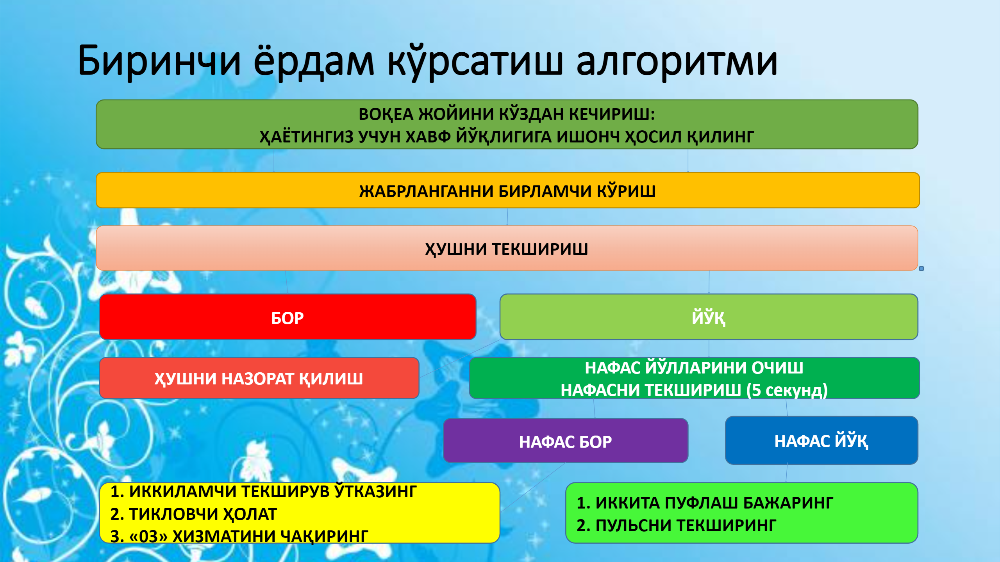
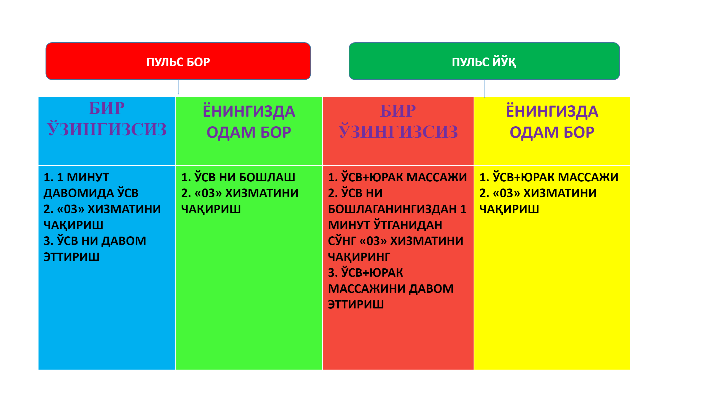

Жавоб ҳаракати
Чақирувга чиқиш пайтида қўйдаги омиллар ҳисобга олиниши керак: Ҳафтанинг куни (йўл ҳаракати ва бошқалар) Кун вақти (мактаб, иш вақти, одамлар уйида ва бошқалар) Об-ҳаво (ёмғир, шамол, бўрон, ва бошқалар) Жамоат тартибсизлиги Топография (йўлнинг нотекис ёки текилиги ва бошқалар) Хавфли материаллар (ёнилғининг оқиб чиқиши, радиация ва бошқалар) Етиб бориш йўли (автострадалар, чорраха, кўприк, баландлик, кенглик, йўлнинг ҳолати ва бошқалар.) Электр симлар Транспорт воситасининг тўғри қўйилиши
 